/math-a5fddfa546aea6fc7b34789cdba6254a.png "y_{hijk}=\mu +\alpha _i+\beta _j+\gamma _k+(\alpha\beta)_{ij}+(\alpha\gamma)_{ik}+(\beta\gamma)_{jk}+(\alpha\beta\gamma)_{ijk}+\varepsilon _{hijk}")
Inhalt |
Angenommen, N Beobachtungen werden mit drei Faktoren verbunden, Faktor A mit I Stufen, Faktor B mit J Stufen und Faktor C mit K Stufen.
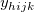 sei die h-te Beobachtung auf Stufe I des Faktors A, Stufe j des Faktors B und Stufe k des Faktors C. Dann kann das Modell der dreifachen ANOVA wie folgt geschrieben werden:
wobei 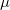 der Mittelwert der gesamten Antwortdaten, /math-d015b015788a3872acceec61ded52bfb.png "\alpha _i\,\!") die Abweichung auf Stufe i des Faktors A;
die Abweichung auf Stufe i des Faktors A; /math-193f021d9028eb9706698a6f5c0f1e0a.png "\beta _j\,\!") die Abweichung auf Stufe j des Faktors B, 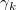 die Abweichung auf Stufe k des Faktors C, 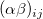 der Wechselwirkungsterm zwischen den Faktoren A und B, 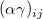 der Wechselwirkungsterm zwischen den Faktoren A und C, 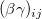 der Wechselwirkungsterm zwischen den Faktoren B und C, 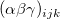 der Wechselwirkungsterm unter den Faktoren A und B und C und 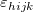 der Fehlerterm ist.
die Abweichung auf Stufe j des Faktors B, 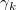 die Abweichung auf Stufe k des Faktors C, 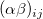 der Wechselwirkungsterm zwischen den Faktoren A und B, 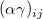 der Wechselwirkungsterm zwischen den Faktoren A und C, 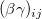 der Wechselwirkungsterm zwischen den Faktoren B und C, 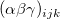 der Wechselwirkungsterm unter den Faktoren A und B und C und 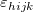 der Fehlerterm ist.
In der dreifachen ANOVA können Anwender ihr Modell festlegen. Sie können beispielsweise den Term ausschließen (falls das so ist, wird der Term im gleichen Moment selbständig ausgeschlossen), so dass ihr Modell folgendermaßen aussieht:
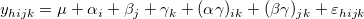
Die Variation der Stichproben eines festgelegten Modells kann durch die Methode der so genannten "Designmatrix" erreicht werden. Wenn das vollständige Modell als Beispiel herangezogen wird, sieht die kurze Vorgehensweise für diese Methode folgendermaßen aus:
Freiheitsgrade (DF) für das gesamte Modell sind 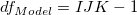. Die gesamte Designmatrix ist 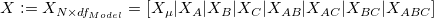, wobei 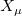 die Teildesignmatrix für /math-c9faf6ead2cd2c2187bd943488de1d0a.png "\mu") ist, die sich normalerweise aus allen "1" zusammensetzt, und weiteren Teildesignmatrizen, bestehend aus ihren tiefgestellten Werten. Angenommen 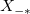 beschreibt X, indem die entsprechende Teildesignmatrix mit Nullen ersetzt wird, zum Beispiel 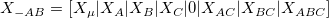
ist, die sich normalerweise aus allen "1" zusammensetzt, und weiteren Teildesignmatrizen, bestehend aus ihren tiefgestellten Werten. Angenommen 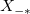 beschreibt X, indem die entsprechende Teildesignmatrix mit Nullen ersetzt wird, zum Beispiel 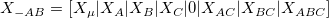
Definieren
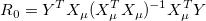
/math-4b044b5a44959ebbbe8951655538bf20.png "R_\mu = Y^T Y")
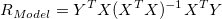
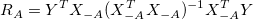
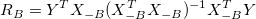
/math-6cb959ea1659d205096410b7a4662bda.png "R_C = Y^T X_{-C}(X_{-C}^T X_{-C})^{-1}X_{-C}^T Y")
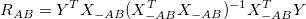
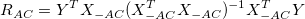
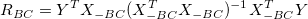
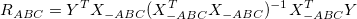
Dann wäre die Summe der Quadratfehler
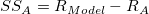
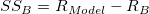
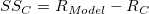
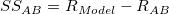
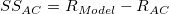
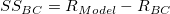
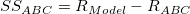
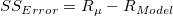
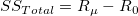
Für das vollständige Modell wird die ANOVA-Tabelle wie unten zusammengefasst:
| Quelle der Variation | Freiheitsgrade (DF) | Summe der Quadrate (SS) | Mittel der Quadrate (MS) | F-Wert | Wahrsch. > F |
|---|---|---|---|---|---|
| Faktor A | I - 1 | /math-8d95f5934baa7c353f18fd77c675e92c.png "SS_A") |
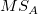 | / 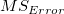 | 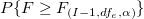 |
| Faktor B | J - 1 | 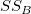 | 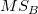 | / | 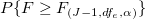 |
| Faktor C | K - 1 | 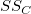 | 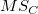 | / | 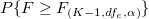 |
| A*B | (I- 1) (J - 1) | /math-23d40e491f33023cbce6ed1898054a81.png "SS_{AB}") |
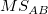 | / | 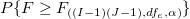 |
| A*C | (I- 1) (K - 1) | 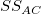 | 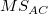 | / | 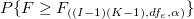 |
| B*C | (J- 1) (K - 1) | 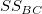 | 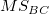 | / | 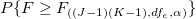 |
| A*B*C | (I- 1) (J - 1)(K - 1) | /math-e3fe9a6e0feaf250ab6566828ab58be7.png "SS_{ABC}") |
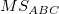 | / | 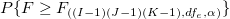 |
| Error | =N-IJK | /math-349fb0475e9b16a6353bbc1aae235e6a.png "SS_{Error}") |
|||
| Gesamtsumme | N - 1 | /math-100f5db42fc55631c7b4e798218f6a8f.png "SS_{Total}") |
Es gibt verschiedene Methoden des Mittelwertvergleichs in Origin. Wir verwenden die NAG-Funktion ocstat_dlsm_mean_comparison(), um Mittelwertvergleiche durchzuführen.
Zwei Typen des mehrfachen Mittelwertvergleichs:
Ein-Schritt-Methode Sie erstellt simultane Konfidenzintervalle, um zu zeigen, wie sich die Mittelwerte unterscheiden. Dazu gehören Tukey-Kramer, Bonferroni, Dunn-Sidak, Fisher’s LSD und Scheffé.
Schrittweise Methode Diese Methode führt nacheinander die Hypothesentests aus. Dazu gehören der Holm-Bonferroni- und der Holm-Sidak-Test.
Die Analyse der Trennschärfe berechnet die Ist-Trennschärfe für die Stichprobendaten als auch die hypothetische Trennschärfe, falls zusätzliche Stichprobenumfänge angegeben sind.
Die Trennschärfe einer dreifachen Varianzanalyse ist ein Maß für deren Empfindlichkeit. Die Trennschärfe ist die Wahrscheinlichkeit, dass die ANOVA Unterschiede in den Mittelwerten der Grundgesamtheiten aufdeckt, wenn tatsächliche Unterschiede existieren. Drückt man dies mit den Begriffen der Null- und Alternativhypothese aus, so ist die Trennschärfe die Wahrscheinlichkeit dafür, dass die Teststatistik F stark genug ist, um die Nullhypothese zu verwerfen, wenn sie tatsächlich verworfen werden sollte (d.h. die Nullhypothese ist nicht wahr).
Der Dialog Dreifache ANOVA in Origin kann Trennschärfen für Faktor A, Faktor B und Faktor C berechnen. Wenn die festgelegten Schnittterme ausgewählt sind, kann Origin auch die Trennschärfe für sie berechnen.
Die Trennschärfe wird durch folgende Gleichung definiert:
/math-e3a9b7f790e5b9b01d2fe974337ea4cf.png "power=1-probf(f,df,dfe,nc)\,\!")
wobei f die Abweichung von der nicht zentrierten F-Verteilung mit df und dfe Freiheitsgraden und nc = SS/MSE ist. SS ist die Summe der Quadrate der Quelle A, B, C, A*B, A*C, B*C oder A*B*C. MSE ist das Mittel der Quadrate des Fehlers, df sind die Freiheitsgrade des Zählers, dfe sind die Freiheitsgrade der Fehler. Alle Werte (SS, MSE, df und dfe) werden der ANOVA-Tabelle entnommen. Der Wert von probf( ) wird durch die NAG-Funktion nag_prob_non_central_f_dist (g01gdc) ermittelt. Beachten Sie bitte die NAG-Dokumentation für weitere Hintergrundinformationen.
Die obige Beschreibung ist eine kurze Übersicht über den Algorithmus der dreifachen ANOVA. Weitere Informationen über die Einzelheiten der mathematischen Deduktion finden Sie im entsprechenden Teil des Anwenderhandbuchs.
Wir verwenden die folgenden Statistiken, um Levenes Test durchzuführen.
/math-d3bfbc09dea01e9ac160725781de92ea.png "L = \frac{(N-k)\sum_{k}^{i=1}n_i(Z_i-Z)^2}{(k-1)\sum_{k}^{i=1}\sum_{n_i}^{j=1}(Z_{ij}-Z_i)^2}")
wobei
N ist die Anzahl der Beobachtung, ist die Anzahl der Teilgruppen mit Beobachtung.
Sie erhalten dann den p-Wert, der ist.